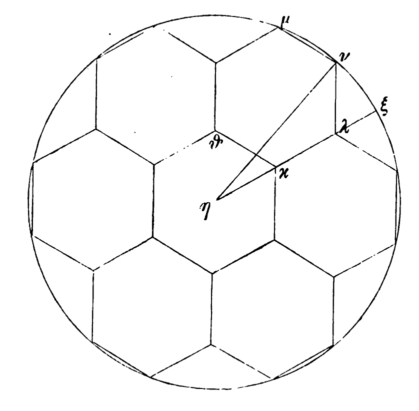

Proposition 23: Seven Regular Hexagons Inscribed in a Circle¶
Synagoge Book VIII, Chapters 42–44, Proposition 23 (Hultsch III, pp. 1096–1102) · Critical English Edition
42 (Prop. 23). Useful also are the constructions in what are properly called instrumental problems, and especially whenever, guided toward ease by analysis, they are able to escape analogous trial and error; as, for example, into a given circle to inscribe seven hexagons, one about the same center as the circle, and the remaining six described upon the sides of the middle one and having each its opposite side fitted into the circumference of the circle.
Let the given circle be about center Η, and let a side of a hexagon ΘΚ be placed about the same center, so that
f. 0109 · p. 1098the hexagon described upon ΘΚ has its side ΜΝ fitted into the circumference of the circle, and let ΗΚ be joined; it is therefore in a straight line with side ΚΛ of the hexagon, because angle ΗΚΘ is two-thirds of a right angle, while angle ΘΚΛ is one right angle and a third. Let ΗΝ be joined. Since ΗΚ and ΚΛ are equal, ΗΛ is double ΛΝ. And angle Λ is given, for it is one right angle and a third; therefore triangle ΝΛΗ is given in species; therefore the ratio of ΗΝ to ΝΛ is given. And ΗΝ is given; therefore the side ΝΛ of the hexagon is also given.
43. The instrumental construction is as follows: let ΑΓ be set out as a third part of the radius of the circle, and upon it let segment ΑΒΓ of a circle be described admitting an angle of two-thirds of a right angle, and of whatever parts ΑΓ is five, let ΓΕ be cut off as four such parts, and let tangent ΒΕ be drawn; I say that ΑΒ, being joined, is equal to the side ΘΚ of the hexagon.
Let ΒΓ be produced, and let ΒΔ be cut off equal to ΑΒ; therefore ΑΒΔ is equilateral. And let ΑΖ be equal to the radius of the circle. Since ΑΕ has to ΕΓ the ratio which nine has to four, the square on ΑΒ will also have to the square on ΒΓ the same ratio; therefore ΑΒ, that is ΒΔ, is one and a half times ΒΓ; therefore ΒΓ is double ΓΔ. But ΖΓ is also double ΓΑ; therefore ΒΖ, being joined, is also double ΑΔ, that is ΑΒ. Now ΗΛ was also double ΛΝ, and they contain equal angles; therefore triangle ΑΒΖ is similar to triangle ΝΛΗ. And ΑΖ is equal to ΝΗ; therefore ΑΒ is also equal to ΛΝ, or to ΘΚ.
The same otherwise more clearly.
44 (Prop. 24). Let a straight line equal to the radius of the given circle be
f. 0113 · p. 1100ΑΖ, and let its third part be cut off, and let it be ΑΓ, upon which let segment ΑΒΓ of a circle be described admitting an angle of two-thirds of a right angle, and of whatever parts ΑΓ is five, let ΓΕ be cut off as four such parts, and let ΕΒ be drawn tangent to the segment, and let both ΑΒ and ΖΒ be joined, and further let ΒΓ, being joined, be produced to Δ, and let ΒΔ be placed equal to ΑΒ, and let ΑΔ be joined. Since, therefore, ΕΓΑ and ΕΒ have been drawn to a circle, and the one cuts the circle while the other touches it, the rectangle contained by ΑΕ, ΕΓ is equal to the square on ΕΒ. Therefore, as ΑΕ is to ΕΒ, so is ΒΕ to ΓΕ. Therefore triangle ΓΒΕ is equiangular with triangle ΑΒΕ. Therefore, as ΕΑ is to ΑΒ, so is ΕΒ to ΒΓ; and therefore, as the square on ΑΕ is to the square on ΕΒ, so is the square on ΑΒ to the square on ΒΓ. But as the square on ΑΕ is to the square on ΕΒ, so is ΑΕ to ΕΓ by Proposition 20 of Book VI. And therefore, as ΑΕ is to ΕΓ, so is the square on ΑΒ, that is the square on ΒΔ, to the square on ΒΓ; therefore the square on ΒΔ has to the square on ΒΓ the ratio which nine has to four; therefore ΒΔ is one and a half times ΒΓ; therefore ΒΓ is double ΓΔ. Now ΖΓ is also double ΓΑ; therefore, as ΖΓ is to ΓΑ, so is ΒΓ to ΓΔ. And the angles at Γ are equal; therefore angle Δ is also equal to angle ΖΒΓ, and angle Ζ to angle ΓΑΔ; therefore, as ΖΒ is to ΒΓ, so is ΑΔ to ΔΓ. Alternately, as ΖΒ is to ΑΔ, so is ΒΓ to ΓΔ. Now ΒΓ is double ΓΔ; therefore ΖΒ is also double ΑΔ, that is ΑΒ. And Δ is two-thirds of a right angle; therefore angle ΖΒΓ is also two-thirds of a right angle. And the whole angle ΑΒΖ is
f. 0115 · p. 1102one right angle and a third. If, then, we have a circle whose center is Η, having its radius equal to straight line ΑΖ, and we draw from its center the straight line ΗΞ, and place straight line ΗΛ equal to ΖΒ, and upon straight line ΗΛ at point Λ construct angle ΗΛΝ equal to angle ΖΒΑ, and join ΗΝ, triangle ΗΛΝ becomes equiangular with triangle ΑΖΒ. And ΑΖ is equal to ΗΝ; therefore ΝΛ is also equal to ΑΒ. And it is manifest that from a straight line equal to ΑΒ arises the inscription of the seven hexagons into the circle.
Archival Plate (Hultsch Vol. III, p. 1097 / folio 0108)¶

